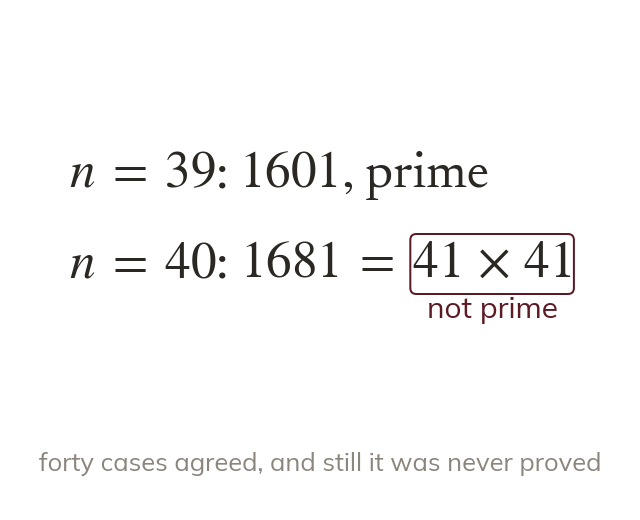

Checking is not proving
Checking values only shows that those values work. The value of is prime until
Checking a statement for a few values only shows that it holds for those values. The rule gives a prime for every from to yet gives